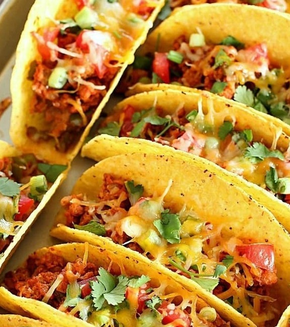
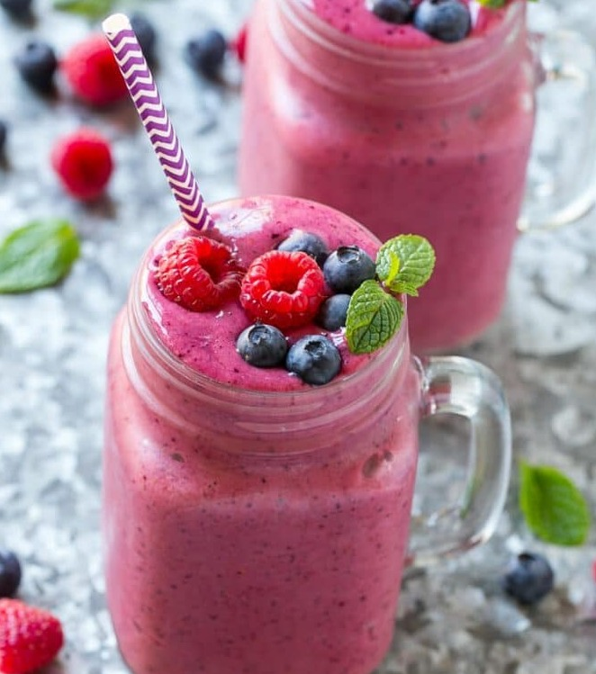
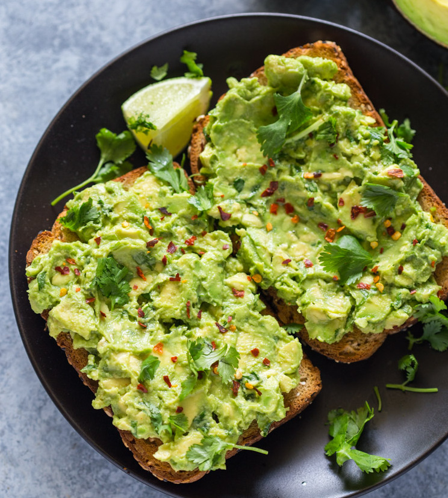
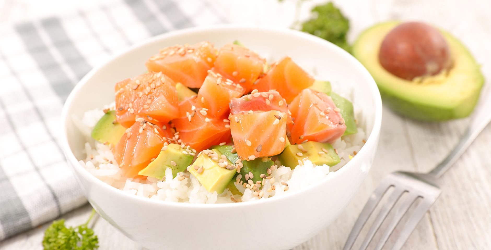

What you need:
- noodles
- garlic
- butter/olive oil
- parmesian cheese
Optional:
- asian sauce
- green onions
- sesame seeds

What you need:
- tortillas/taco shells
- cheese
- beans
Optional:
- mean (chicken, beef, shrimp, etc)
- lettuce
- tomato
- sour cream
- guacamole

What you need:
- two slices of bread
- cheese
- butter/olive oil
Smoothies

What you need:
- frozen or fresh fruit (berries, banana, mango)
- milk (almond, coconut, soy, normal)
- juice
- yogurt
Optional:
- ice
- vanila extract

What you need:
- bread
- avocado
- butter/olive oil
Optional:
- lemon juice
- red pepper flakes
- pepper
- salt

What you need:
- rice (brown, white)
- protien (salmon, tuna, shrimp, crab, tofu)
- veggies (cucumbers, edamame, carrots, radish, avocado)
- toppings (crispy onions, sesame seeds, soy sauce)